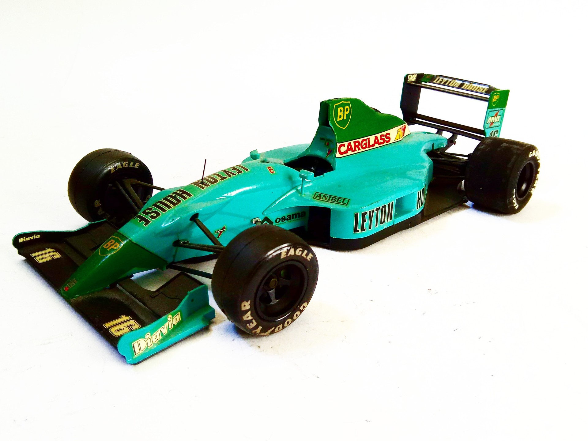

Auto e veicoli stradali · scale model archive
Leyton House CG901 B
Leyton House CG901 B — Kit: Tamiya, Scale: 1/20. 1990 F1 World Championship, car designed by that genius of Adrian Newey #1/20 #Tamiya

Photo gallery
English description
1990 F1 World Championship, car designed by that genius of Adrian Newey
#1/20 #Tamiya
Descrizione italiana
1990 F1 Campionato del Mondo, auto progettata da che genius di Adrian Newey.